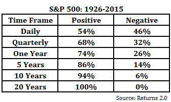

Personal Finance Workshop
This is a post version of a 1-hour personal finance and stewardship talk I’ve shared with some Christians: Personal Finance Workshop. The talk goes through the following topics:
- Giving
- Career & Income
- Spending
- Insurance
- Savings
- Taxes
- Investing
- Recommendations
I usually start with a quote from Tim Challies that I like:
...money can be as big an idol when you seek not to spend it as it can when you do nothing but spend it. Frugality should not be an end in itself but must be a means to a greater end of bringing glory to God and of serving others. Ever and always it is a matter of the heart.
Everyone has different struggles with money and it manifests itself in different ways. Some may spend too much (their idol is using money as a means to show off). Some save too much (their idol is using money as an insurance policy). In both cases, there is idolatry going on. With the people that I’ve associated with, living in California most of my life, the saver/hoarder idol is more common and what I tend to warn people against. Money is a tool. It is a powerful tool in the hands of a genuine believer who wants to honor God. But if one is not careful, it can subtly substitute itself as a god you are trusting in.
Giving
How much to give?
The New Testament doesn’t have any commands about how much to give. There is no one-size-fits-all answer in deciding what percentage to give. People often say time is money. And I think it is similar to how God doesn’t tell us exactly how we should spend our time. It’s possible he wants us to each develop our own convictions.
10% of your gross income starting point, based on the Old Testament idea of a tithe, which means 10 percent. But this is by no means a minimum nor a maximum. One cannot say that another believer is sinning if he does not meet this threshold of giving. However, the reason I say 10% of your gross income is a good starting point is in my experience, it’s never been a comfortable level of giving. There have been times where I’ve thought, wouldn’t it be nice to save more (and implicitly give less)? But the commitment I’ve made to Christ is this tithe that I give represents my understanding that everything is from God. “Every good gift and every perfect gift is from above, coming down from the Father of lights, with whom there is no variation or shadow due to change.” (James 1:17) And when I give to Him, it is an expression of gratitude.
Another question to ask while giving is how are you giving? “Each one must give as he has decided in his heart, not reluctantly or under compulsion, for God loves a cheerful giver.” (2 Cor 9:7) God wants us to give cheerfully, not begrudgingly.
Who to give to?
There are so many good causes and organizations one can give to. For the Christian though, the local church should be the place where your giving goes. Galatians 6:6 says, “Nevertheless, the one who receives instruction in the word should share all good things with their instructor.” Randy Alcorn in this sermon says:
Into the “storehouse.” This was something in Israel that you didn’t decide for yourself. The whole tithe went into the temple, for the work of the Levites. Closest parallel today to the temple is the church, the closest parallel to the Levites is the elders of the church. (You see that in Acts 2 in Jerusalem, where it says the money was laid at the feet of the apostles, who then decided how to distribute it.)
Seems to me the tithe should go to where the center of God’s program, which is the local church. Not to Focus on the Family, Prison Fellowship, Campus Crusade, mission boards, or Eternal Perspective Ministries. Now, the ideal is for the church to support those ministries. The New Testament church is not a storehouse, has a world evangelism focus temple didn’t have. It’s more a clearing house than a storehouse. Acts—apostles pass on to the needy.
Freewill offerings can go anywhere. Beyond the 10% we’re free to invest in eternity with freewill giving.
Giving above the tithe is called an offering and for these there is freedom to decide where to give. Some causes the Bible speaks of are:
- The work of proclaiming the gospel. The letter to the Philippians is basically a missionary support letter. And in Phil 4:15-16, Paul thanks them for their support in his missionary efforts.
- Giving to the needy. Galatians 2:10, “All they asked was that we should continue to remember the poor, the very thing I had been eager to do all along.”
- Having a heart of generosity. Galatians 6:10, “Therefore, as we have opportunity, let us do good to all people, especially to those who belong to the family of believers.” There are going to be needs all around us, treating people to a meal, opening up one’s home to others, helping those that are unemployed. If one has a heart that wants to “do good to all people” you will not only see these opportunities but desire to size them.
Career & Income
Our most valuable financial asset is our income-earning ability. According to the Census Bureau, the median lifetime earnings of a college graduate male is on average $2.4 million, in today’s dollars.
It’s important to steward our God-given abilities, talents, intelligence, and education. This means being faithful in your career and striving to do excellent work. “Whatever you do, work heartily, as for the Lord and not for men knowing that from the Lord you will receive the inheritance as your reward. You are serving the Lord Christ.” (Col 3:23-24) Someone that is trying to do their best to serve the Lord and not merely serving a manager or company will do excellent work. And as one grows their earning potential it will grow their giving potential.
This is a powerful concept, and where it is practiced, it will absolutely transform a workplace. Employees will be diligent, hardworking, joyful (for they have the privilege of working for Christ!), faithful in the performance of their duties (for they know Christ will reward them), committed to a high quality of product or work output (for they are presenting the result to Christ), and completely honest in their dealings with others (for they are speaking in the hearing of Christ himself). Any employer would be glad to have employees like this.
One should also not be afraid to negotiate compensation, whether at the job-offer stage or during an annual review at your current job. I have yet to hear of a situation where an offer was pulled because someone negotiated a salary. Usually employers have a range that candidates are eligible for but if you’ve already gotten to the stage of being given an offer, the company really likes you and will do their best to bring you on.
Income vs Savings
Income is not the same as savings. Having a high income does not automatically make you wealthy. Also, having a low income does not automatically make you poor. Building wealth comes from the absence of spending (e.g. saving). You can probably think of many examples of high income earners who are not wealthy, like pro athletes who retire but find themselves bankrupt in a number of years. There have also been examples of low-income earners who through diligently saving, investing and years of compound interest accumulate surprising amounts of wealth in the end.
Living off one income
The arrival of children in a family marks a significant and joyful shift in life. Yet, it also introduces new financial considerations, among which childcare is of particular importance. As a Christian family, it's essential to approach these considerations prayerfully, seeking God's wisdom and guidance in every decision. The cost of childcare is often close to how much rent or mortgage is.
The mother becoming a stay-at-home mom is one option. But this requires transitioning to a single-income household. A prudent way to anticipate the impact of this change is to "preview" the single-income lifestyle for a specific period. By living off of one income temporarily, families can gain a realistic understanding of what the change would entail. This exercise can also help identify areas for potential savings or adjustments to accommodate this new financial reality.
For the husband, this transition can inspire a renewed commitment to working diligently. By striving to provide for the family, he can create an environment where the mother has the option to stay at home, should they decide that is the best choice. This hard work is not merely about financial provision but is an expression of love and commitment to the family's wellbeing. This should begin prior to having kids and even prior to getting married. Men should be diligent in their career (serving the Lord Christ, Col 3:24), intentionally choosing careers where they can better fulfill their God-given roles to lead their families and wives. I’d argue there are some careers that take you away from your family that practically speaking make it much more difficult to fulfill that role.
Spending
As Christians, we are called to be good stewards of the resources God has given us. This includes our money. One way to be a good steward of our money is to live below our means. This means spending less money than we earn. When we live below our means, we have more money to save and give to others.
One way to live below our means is to distinguish between needs and wants. Needs are things that we absolutely must have in order to survive. Wants are things that we would like to have, but that we do not need. It is important to be honest with ourselves about what we need and what we want. When we are tempted to buy something that we do not need, we should ask ourselves if it is really worth the money.
Our reference group can also influence our spending habits. Our reference group is the group of people that we spend the most time with. They can be our friends, family, neighbors, or church members. Our reference group can influence our spending habits by setting the standard for what we think we should have. For example, if our reference group all have new cars, we may feel like we need a new car even if our old car is still in good condition.
It is important to remember that our reference group's definition of a necessity may not be the same as our own. We need to be careful not to let our spending habits be influenced by what other people think we should have. Instead, we should focus on our own needs and priorities.
Living simply and frugally is about striving for a less complicated lifestyle, and it should not be misconstrued as being cheap. It's about making deliberate and thoughtful choices that align our spending with our values. However, we must be cautious that frugality itself does not become an idol. The Apostle Paul, in 1 Corinthians 6:12, reminds us, "Everything is permissible for me, but not everything is beneficial." Our financial decisions should never overshadow our commitment to God and our love for our neighbors. It is important to remember that being frugal can become an idol. If we become so focused on saving money that we forget to enjoy life, then we are doing it wrong. Frugality should be a tool that helps us to live a more fulfilling life, not a burden that weighs us down.
By examining your spending each month, you can better understand your priorities and realign them if needed. This exercise can serve as a practical reflection of where your heart truly lies, as Jesus said, "For where your treasure is, there your heart will be also" (Matthew 6:21).
One should also consider the 'weaker brother' when making financial decisions. In our spending and lifestyle choices, we should be mindful of the potential impact on others who may be more vulnerable or easily influenced. We are called to love and care for one another, and our financial behavior can be a powerful demonstration of this love.
Tracking expenses aka budgeting
Understanding where your money goes is an integral part of financial stewardship. This knowledge not only aids in preventing overspending but can also serve as a tool for contentment. When we have a clear picture of our financial landscape, we can appreciate what we have, live within our means, and cultivate a heart of gratitude.
Being aware of how our resources are allocated can help ensure our spending is based on needs rather than impulsive wants. It brings to light areas where we might need to exercise restraint or make adjustments.
It's particularly crucial to get the "big ticket" items right, as they often account for a significant portion of our budgets. These can include housing, taxes, cars, and charitable giving.
According to the Consumer Expenditure Survey, the largest chunk of expenditure for both all US and under 25 categories is dedicated to housing, representing 27% and 25% respectively. Taxes and transportation also constitute significant portions, each accounting for 15% of the total expenditure for all US and slightly less for the under 25 demographic. Food, entertainment, and education are other important areas of spending.
In the context of Christian personal finance, the line item of charitable giving deserves special attention. While it represents a relatively small percentage of total expenditure (3% for all US and 1% for those under 25), it's an area of spending that speaks directly to our spiritual commitment and values. Giving is not merely an economic act; it's an expression of faith and a response to God's generosity towards us.
The act of tracking and understanding your spending is not merely a financial exercise. It's a spiritual discipline that enables us to live responsibly, generously, and contentedly. It's about ensuring our financial decisions align with our Christian values, helping us live out our faith in a tangible way.
Use YNAB or a spreadsheet
Implementing a budgeting tool can greatly enhance your financial management and offer a clear picture of where your money is going. Two such tools include YNAB (You Need A Budget) and Google Sheets, each with their unique benefits.
YNAB is a powerful budgeting software that operates under four main rules. The first two rules are particularly insightful for managing personal finances from a Christian perspective.
The first rule, "Give Every Dollar a Job," encourages us to be intentional with our resources. Much like the biblical principle of stewardship, this rule compels us to allocate every dollar to a specific purpose, ensuring that our money is used wisely and purposefully.
The second rule, "Embrace Your True Expenses," pushes us to look beyond immediate or daily expenses and plan for larger, less frequent costs. This could include annual insurance payments, car maintenance, or unexpected medical bills. By setting money aside each month for these 'true expenses,' we cultivate a habit of foresight and preparedness, helping us avoid debt and financial stress. I’ve found this rule to be particularly helpful in decreasing the amount of stress when an infrequent large expense pops up.
One can do something similar with Google Sheets (using a template like this one). You won’t have the ability to automatically import transactions and a nice UI, but for those getting started, it will probably suffice.
Regardless of the tool you choose, the ultimate goal is to gain control over your finances, live within your means, and align your spending with your values. By doing so, we honor God with our resources, demonstrating faithfulness and wisdom in our financial stewardship.
Housing
Deciding whether to rent or buy a home is a significant financial decision that involves various factors. Thankfully, tools like rent vs. buy calculators can provide a helpful starting point for weighing your options.
When considering renting, we typically think of the monthly rental payments, which are often lower than mortgage payments. Renting also offers the flexibility of moving more easily, without the burden of selling a property. Plus, as a renter, you're generally not responsible for maintaining the property or increasing its value, and some utilities may even be included in your rent. Contrary to popular belief, renting is not "throwing money away" but paying for a service - housing.
On the other hand, buying a home requires significant upfront costs, like a down payment, and ongoing costs such as mortgage payments, property taxes, maintenance, homeowners association (HOA) fees, and homeowners insurance. These expenses often make homeownership the largest financial burden for most individuals or families. However, owning a home can also offer certain financial benefits like tax deductions for mortgage interest and property taxes.
It's crucial to note that buying a home often involves high realtor fees, making it less economical if you don't plan to stay in the home for at least 5 years. Your mortgage payment is a combination of principal and interest. While the interest is an expense, the principal portion is like "forced savings," as it builds equity in your home over time.
However, it's important to remember that your primary residence should not be viewed primarily as a savings or investment vehicle. It is more appropriately considered a consumption item - a place where you live and enjoy life.
Whether you choose to rent or buy, make the decision prayerfully, considering not only the financial implications but also how it aligns with your lifestyle, goals, and values. Remember, in all things, we are called to steward God's resources wisely and faithfully.
Here are some pros and cons for renting vs buying:
Renting
Pros:
- Monthly rental payments are typically lower than mortgage payments.
- Renters have more flexibility to move if their needs change.
- Renters are not responsible for maintenance or repairs to the property.
- Renters may be able to deduct some of their rent payments on their taxes.
Cons:
- Renters do not build equity in a home.
- Renters may not have as much control over their living environment as homeowners.
- Renters may be subject to rent increases.
Buying
Pros:
- Homeowners build equity in their home over time, a form of “forced savings”
- Homeowners have more control over their living environment.
- Homeowners may be able to deduct some of their mortgage interest and property taxes on their taxes.
Cons:
- Homeowners need to make a down payment and have a mortgage payment.
- Homeowners are responsible for maintenance and repairs to the property.
- Homeowners may be subject to property taxes and HOA fees.
Credit Cards
As Christians, we are called to be good stewards of the resources God has given us. This includes our money. One way to be a good steward of our money is to use credit cards wisely.
Credit cards can be a great way to earn rewards, such as cash back, travel points, or merchandise. However, it is important to use credit cards responsibly. Only use credit cards if you can afford to pay the balance in full each month. If you carry a balance on your credit card, you will be charged interest. Interest rates on credit cards can be very high, and negative compound interest can quickly add up.
One way to use credit cards wisely is to use a 2% cash back credit card. A 2% cash back credit card will give you 2% cash back on all of your purchases. This can add up to a significant amount of money over time.
The Bank of America Preferred Rewards credit card is a great option for a 2% cash back credit card. This card offers 2% cash back on all purchases, and you can earn up to 5.25% cash back if you jump through some hoops. To earn the maximum cash back, you must have a $100,000 balance across BofA accounts. To do this, you can transfer a Roth IRA from another brokerage over or rollover a 401k into a Traditional IRA. to See FrugalProfessor’s post on how to do this.
Student Loans
Student loans are indeed a significant financial concern for many individuals, often termed the "bane of all students’ existence." Navigating repayment plans and interest rates can be challenging, but understanding the various aspects of student loans can help manage this burden more effectively.
One potential relief comes in the form of the student loan interest deduction, which allows you to deduct up to $2,500 of the interest you paid on a student loan during the tax year. However, there are income limits for eligibility. For instance, if your gross income is above $85,000, the student loan interest is no longer tax-deductible.
Due to the COVID-19 pandemic, interest on federal student loans has been suspended. Please check the Federal Student Aid site for when these payments will resume https://studentaid.gov/announcements-events/covid-19/payment-pause-zero-interest. This suspension provides temporary relief for borrowers, reducing the financial burden of these loans.
As a tip, if you still hold federal student loans, it might be wise to keep them until the suspension is lifted. This is because, during the suspension, the interest on your loans is effectively zero, making them less costly to hold. However, if you don't have federal student loans, or once the suspension is lifted, consider refinancing your student loans to secure a lower interest rate. This can help reduce the overall cost of your loans and potentially shorten your repayment term.
Insurance
Different Types
Insurance is a crucial part of financial planning, providing a safety net for unexpected events that could otherwise cause significant financial strain. There are several types of insurance to consider, each serving different purposes:
- Health insurance covers medical costs, ensuring you can afford necessary healthcare.
- Disability insurance provides income protection in case you're unable to work due to a disability.
- Auto insurance covers costs related to vehicle accidents or damages.
-
Life insurance provides financial support to your dependents in the event of your death. There are two primary types: term life and permanent life insurance.
-
Term life insurance is recommended for most individuals. It covers a specified term, typically 20-30 years, and has no cash value. To get a quote for term life insurance, you can visit websites like Term4Sale
- Permanent life insurance lasts your entire lifetime and has a cash value component. One form of permanent life insurance, Whole Life, is often more expensive due to high premiums and fees. It can also be difficult to determine what portion of your payments is used for the insurance and what accumulates as cash value. A common recommendation is to buy term insurance and invest the difference, as this often results in a better financial outcome.
- Renters/Homeowners insurance covers losses or damages to your home and personal belongings.
- Umbrella insurance provides additional liability coverage beyond the limits of your other insurance policies.
If you're interested in learning more about whole life insurance, there are numerous resources available. A good starting point is the White Coat Investor's series debunking the myths of whole life insurance, which provides a comprehensive breakdown of this complex product.
Health Savings Accounts
A Health Savings Account (HSA) is a tax-advantaged account designed to help individuals or families covered under high-deductible health plans save for qualified medical expenses.
In terms of contribution limits, as of 2021, you can contribute up to $3,650 for an individual and $7,300 for a family. These contributions are pre-tax, reducing your taxable income for the year.
One of the primary benefits of an HSA is its triple tax advantage:
- Contributions reduce your taxable income.
- The money in the account grows tax-free.
- Withdrawals for qualified medical expenses are also tax-free.
This makes HSAs a highly effective tool for managing healthcare costs. Additionally, after the age of 65, you can use the money in the HSA like a retirement account. You could pay for medical expenses out of pocket, save the receipts, and then reimburse yourself in retirement.
A tip to consider: HSAs can be particularly beneficial when you're young and without significant health conditions, as you're likely to have fewer medical expenses and can let the money in the account grow. Also, most employers contribute to your HSA, which can further boost your savings.
Savings
Warnings
As we discuss saving money, it's vital to reflect on several biblical warnings that caution us against the potential pitfalls associated with wealth and material possessions.
One such cautionary tale is the Parable of the Rich Fool in Luke 12:13-21. In this parable, a man decides to build bigger barns to store his abundant crops, thinking he has secured his future. But God says to him, 'You fool! This very night your soul is required of you; and now who will own what you have prepared?' This story warns us against the folly of placing our security in material wealth while neglecting our spiritual wealth.
Scripture repeatedly warns us against the love of money. Hebrews 13:5 admonishes us to keep our lives free from the love of money and to be content with what we have, reminding us of God's faithful promise, “I will never leave you nor forsake you.” Similarly, 1 Timothy 6:10 warns that the love of money is a root of all kinds of evils, leading some to wander away from the faith and causing themselves many pains.
- 1 Timothy 6:17 provides further guidance for those who are wealthy in this present age. It advises not to be haughty or to set hopes on the uncertainty of riches, but instead to place hope in God, who richly provides us with everything to enjoy.
- Matthew 6:24 underscores the impossibility of serving both God and money, highlighting the importance of placing our loyalty and trust in God above all else.
- Luke 12:15 warns us to guard against all covetousness, for one's life does not consist in the abundance of his possessions.
These warnings serve as important reminders for Christians to approach saving and spending with a godly perspective, prioritizing spiritual wealth and heavenly treasures over earthly riches, and always maintaining a heart of contentment and gratitude for God's provision.
Trusting God
In the realm of personal finance, trust in God serves as the bedrock of our decisions and attitudes. The amount we save or give away is not as important as our heart's attitude towards God and our resources. For instance, one person might save and give away 10% of their income, while another gives away 50%. However, the percentage itself doesn't necessarily reflect the condition of their heart towards God.
In terms of worldly savings versus Christian savings, the saved amounts might be identical, but the intentions and goals can significantly differ. Worldly savings might be driven by self-reliance, fear, or the desire for material comforts. On the other hand, Christian savings should reflect trust in God, stewardship of His resources, and a goal to further His kingdom.
This distinction becomes even more apparent in times of financial instability, such as a market crash. While such events can induce fear and panic, those who trust in God can rest in His providence, knowing that our ultimate security lies not in earthly wealth but in Him.
As Christians, it's important to have a purpose for our savings. This might be for a big-ticket item such as a wedding, a car, a missions trip, a special offering, or a down payment on a house. Yet, regardless of our savings goal, we should always maintain a loose grip on our resources, recognizing that everything we have is from God and ultimately belongs to Him.
This mindset aligns with 1 Timothy 6:7, which reminds us, "For we have brought nothing into the world, so we cannot take anything out of it either." As we navigate our financial journey, let's strive to trust in God's provision, steward our resources wisely, and maintain a heart of contentment and generosity.
Saving Practical Tips
- Maximize Employer 401k Match: If your employer offers a 401k match, make sure to contribute enough to receive the maximum match. This is essentially free money that can significantly boost your retirement savings.
- Save for Specific Goals: Whether it's a wedding, a down payment on a house, or another significant expense, saving towards specific goals can make the process more manageable and motivating.
- Utilize Tax-Advantaged Accounts: Maximize your contributions to tax-advantaged accounts like a Roth IRA. Contributions to a Roth IRA are made with after-tax dollars, but withdrawals in retirement are tax-free. Plus, you can withdraw your contributions (but not earnings) without penalty at any time, which can be helpful in a pinch.
- Aim to Save 15-20% of Your Income: This percentage should include any money used to pay off debt, especially high-interest debt, which can drain your resources over time.
- Establish an Emergency Fund: Aim to save 3-6 months' worth of living expenses in an easily accessible account for emergencies like unexpected unemployment or health emergencies. This fund should be separate from your savings for expected large expenses.
- Choose a High-Yield Savings Account: Your emergency fund should be easily accessible and not subject to market risk. High-yield savings accounts, like those offered by Marcus or Ally Bank, can be a good choice.
I-Bonds
I-Bonds, or inflation-linked savings bonds, can be a great addition to your financial strategy, especially during periods of elevated inflation. If you purchased I-bonds between November 2022 and April 2023, they will yield a significant 6.89% interest.
Let's look at the pros and cons of investing in I-Bonds:
- Pros:
- Risk-Free High Interest: I-Bonds offer a high interest rate, which is virtually risk-free. This is especially advantageous compared to other risk-free savings vehicles.
- Inflation Protection: The interest rate of I-Bonds is indexed to inflation, which means your investment maintains its purchasing power over time.
- No Interest Rate Risk: Unlike Treasury Inflation-Protected Securities (TIPS), I-Bonds do not carry interest rate risk. If interest rates increase, the price of your I-Bond won't decrease.
- Cons:
- Access to Money: Your money is locked up for 12 months. If you withdraw your investment before 5 years, you'll lose the last three months' worth of interest.
- TreasuryDirect: You must buy I-Bonds through TreasuryDirect, which isn't the most user-friendly site.
- Account Management: This investment adds another account to manage and track.
- Purchase Limits: You can buy up to $10k per person per year. However, if you're married and have a living trust, you can open three accounts and contribute up to $30k per year.
Education Savings - 529s
A 529 plan is a valuable tool for saving for education expenses. This savings plan allows your investments to grow tax-deferred, and the distributions are tax-free when used for qualified education expenses such as tuition, room and board, and textbooks.
In some states, contributions to a 529 plan are eligible for a state income tax deduction. Unfortunately, California does not offer this deduction, so residents can choose any 529 provider that best fits their needs. You could use California's own Scholarshare plan, or opt for a 529 plan offered by a brokerage like Fidelity, Schwab, or Vanguard. This could help simplify your financial management if you already have accounts with these brokers.
A crucial factor to consider is that a 529 plan is reported as a parental asset on the Free Application for Federal Student Aid (FAFSA). This means it has a minimal effect on financial aid eligibility, reducing the potential aid package by a maximum of 5.64% of the account's value, which is significantly less than other student assets.
Taxes
Taxes on what you earn
Understanding taxation is a crucial part of managing personal finances. In the United States, there are two main types of individual income tax: federal and state. Both use progressive tax brackets, which means that the rate of tax increases as the taxable amount increases.
Federal income tax rates range from 10% to 37%, depending on your income level. If you live in California, state income tax rates range from 1% to 12.3%.
In addition to income taxes, there are also payroll taxes, which include Social Security and Medicare taxes. The Social Security tax rate is 12.4%, and the Medicare tax rate is 2.9%. These are typically split between the employer and employee, with each paying half, unless you are self-employed, in which case you are responsible for the entire amount.
Understanding the difference between marginal and effective tax rates is also important. Your marginal tax rate is the rate you pay on the last dollar of your income and determines your tax bracket. On the other hand, your effective tax rate is the average rate at which your income is taxed, taking into account all of the tax brackets through which your income passes.
A practical tip is to consider filing your own taxes. With tax software, this task may not be as daunting as it seems. Not only can this save you money, but it can also provide a valuable learning experience, increasing your understanding of how taxation works and how it impacts your finances.
Tax Deductions
Understanding tax deductions and credits can significantly impact your tax liability. Tax deductions reduce your taxable income, while tax credits directly reduce the amount of tax you owe.
Tax Deductions: These reduce your taxable income, lowering your overall tax burden. Common deductions include the standard deduction, student loan interest, taxes, retirement contributions such as those to a 401k, and Health Savings Account (HSA) contributions.
For the tax year 2021, the standard deduction is $12,550 for singles and $25,100 for married filing jointly (MFJ). The standard deduction is a set amount that reduces your taxable income, and it's available to all taxpayers who do not itemize their deductions.
Itemized deductions include mortgage interest, taxes paid (such as state and property taxes), and charitable donations. If your itemized deductions total more than your standard deduction, you might choose to itemize. For example, if you earn $125,000 and tithe 10% of your income, you may find it beneficial to itemize.
Tax Credits: These are even more valuable than deductions because they directly reduce the amount of tax you owe. An example of a tax credit is the Lifetime Learning Credit, which can provide up to $2,000 per tax return to offset the cost of higher education.
Investing
Why Invest?
Any discussion about investing needs to start with why investing is important. The main reason we invest is to grow our money over time. This growth can help us achieve our financial goals, such as retirement, education, or buying a home. This growth is important also to keep up with inflation. If you stash your cash away in savings account, you'll lose purchasing power over time.
Something I think most people do not fully appreciate is how powerful compound interest is. This article from moneyguy.com provides a comprehensive and detailed look at the power of saving and compound interest over time.
The table at the bottom provides a breakdown of how much one needs to save each month, given their current age, to reach a net worth of $1 million by 65. For instance, a 20-year-old would need to save approximately $95 per month, while a 50-year-old would need to save about $2,480 per month.
This underscores the importance of starting to save and invest as early as possible to take advantage of the power of compound interest over time. The more time you have to let your money grow, the less you have to save each month to reach your retirement goal.
Basics

Stocks and bonds are the two primary investment types that allow individuals to participate in the financial markets, but they come with distinct characteristics and risks:
Stocks:
- Ownership: When you buy a stock, you become a partial owner of that company.
- Risk & Return: Stocks generally have a higher risk, but they also offer a higher potential return.
- Dividends: Some stocks pay dividends, which are a portion of the company's profits distributed to shareholders.
- Voting Rights: Stockholders often have voting rights in company decisions, depending on the type of stock.
Bonds:
- Lending: When you buy a bond, you're essentially lending money to the entity that issued the bond (like a corporation or government).
- Risk & Return: Bonds are generally considered lower risk but also provide lower potential returns compared to stocks.
- Interest: Bonds pay interest to the bondholders, usually semi-annually.
- Maturity: Bonds have a maturity date, at which point the bond issuer repays the bond's face value to the bondholder.
Never Bear Too Much or Too Little Risk

According to historical data, in the short term, stocks are perceived to be riskier than bonds. This is because stocks can exhibit substantial volatility, potentially losing up to 50% of their value in a single year. In contrast, bonds, with their fixed interest payments and principal repayment at maturity, are generally more stable and can lose around 3% in a bad year.
However, it's crucial not to lose sight of the long-term perspective. Over time, inflation—the gradual increase in prices and consequent erosion of purchasing power—emerges as a significant risk. Strikingly, inflation makes bonds riskier than stocks over the long term. This is because the fixed interest payments of bonds do not keep pace with rising prices, effectively reducing the real return you receive from these investments.
Looking at historical trends, the worst 10-year return period for bonds saw returns 10% lower than the worst equivalent period for stocks. Even more striking is the fact that the chance of losing money over any 10-year period was seven times greater for bonds than for stocks.
Furthermore, over any 10-year period, stocks outperformed bonds 89% of the time. And over 20-year periods, stocks beat bonds every time, consistently managing to outpace inflation. This demonstrates the power of equity investment for long-term wealth creation and inflation protection.
Further reading: Playing the Probailities
Passive vs. Active Investing
When it comes to investing, there are two primary strategies to consider: passive and active investing.
Passive investing involves tracking a market index, such as the S&P 500. This method relies on the overall performance of the market, with the understanding that, over time, the market will typically increase in value. While it's true that both passive and active investing strategies involve some degree of human judgment (for instance, in the selection of which index to track), passive funds typically involve less trading and therefore carry lower fees. This is one of the primary advantages of passive investing: the lower costs can lead to higher net returns over time.
Active investing, on the other hand, involves a more hands-on approach. Active fund managers aim to outperform the market by selecting and managing a portfolio of individual stocks, bonds, or other assets. However, data has shown that active managers often struggle to consistently beat the market over long periods of time. This is partly because the costs associated with frequent trading can eat into returns, and also because accurately predicting market movements is notoriously challenging.
Consider this: if professionals who dedicate their careers to active investing have a hard time beating the market, it might not be the best use of your time to try to do the same. In fact, the fees for active management are usually much higher than those for passive funds (typically around 0.85% per year compared to 0.10% for passive funds).
This is not intuitive because we're used to thinking that the more you pay for something, the better it is. But when it comes to investing, the opposite is true: the less you pay, the more you keep. It's also not intuitive because we're also used to thinking that the more you do something, the better you get at it. But when it comes to investing, the opposite is also true: the more you do, the more you lose. Therefore my recommendation is to diversify and buy total market index funds.
SPIVA is a company that has been tracking the returns of active managers vs. the market. Their data shows that over 97% of active managers underperform the market over a 20 year period. See this report for more comparisons for international equity and fixed income. The results are generally similar.

Importance of Diversification
I love this graphic that's called an "asset quilt." It shows the returns of different asset classes over the past 20 years. Each color represents a different asset classes. The assets are sorted where in a given year, the higher returns are at the top. You can see visually based on how randomly distributed the colors are, how difficult it is for one asset class to consistently outperform the others. Much of this can be explained by reversion to the mean.
 Source: NovelInvestor.com
Source: NovelInvestor.com
1-Fund Portfolio

Implementing a diversified portfolio no longer requires you to buy multiple stocks and bonds or even multiple funds. There are one-fund portfolios that will do all of the heavy lifting for you. Most of the large fund providers have target-date retirement funds that are 1-fund portfolios. They each follow a glide-path that starts out more aggressive and becomes more conservative as you approach retirement. The glide path is the percentage of stocks vs. bonds. The Vanguard glide path is shown above.
Further Reading: Vanguard - TDF Glide Path
3-Fund Portfolio
If you want a little more control over your asset allocation, you can implement a 3-fund portfolio. This is a portfolio that consists of 3 funds: a total US stock market fund, a total international stock market fund, and a total bond market fund. The percentages you allocate to each fund will depend on your risk tolerance and time horizon. For example, if you're young and have a long time horizon, you might allocate 80% to stocks and 20% to bonds. If you're older and have a shorter time horizon, you might allocate 60% to stocks and 40% to bonds. The 3-fund portfolio is a great way to implement a diversified portfolio with low fees.
Further Reading: Bogleheads - Three-fund Portfolio
Behavior Gap

The "behavior gap" is a term that describes the difference between the returns an investment could theoretically yield and the returns an average investor actually achieves. This gap is largely driven by emotional decision-making. Vanguard founder John Bogle highlighted this concept with a striking statistic: from 1997 to 2011, while the average equity mutual fund investment gained 173%, the average equity mutual fund investor earned only 110%.
The root of this discrepancy is often attributed to investors letting emotions guide their investment decisions. Instead of adhering to a long-term, disciplined investment strategy, many investors buy when the market is high out of greed and sell when the market is low out of fear. This behavior often results in buying high and selling low, which is the opposite of a successful investment strategy.
Another way to visualize this idea is this realistic graphic of investor emotions:

Further Reading: Behavior Gap
Stock Picking is Hard
But you might say, what if I just picked Tesla back in 2011? If I had invested $10,000 back then, I would've been left with $925,516 come 2023.
But that makes a couple of large assumptions. It assumes you would've been able to hold through these large drawdowns (how much your portfolio is down). Just in the last 10 years (2014-2023), there were separate drawdowns of:
| Depth | Start Date | To Bottom | Bottom Date | To Recover | End Date | Total |
|---|---|---|---|---|---|---|
| -73.63% | Nov 4, 2021 | 291 | Jan 2, 2023 | — | — | — |
| -60.63% | Feb 19, 2020 | 20 | Mar 17, 2020 | 56 | Jun 7, 2020 | 76 |
| -53.51% | Sep 18, 2017 | 428 | Jun 2, 2019 | 139 | Dec 17, 2019 | 567 |
| -49.77% | Sep 4, 2014 | 361 | Feb 9, 2016 | 288 | Apr 2, 2017 | 649 |
| -38.46% | Nov 25, 2010 | 61 | Feb 22, 2011 | 264 | Mar 11, 2012 | 325 |
| -37.68% | Sep 30, 2013 | 41 | Nov 25, 2013 | 50 | Feb 9, 2014 | 91 |
| -36.25% | Jan 26, 2021 | 28 | Mar 7, 2021 | 159 | Oct 20, 2021 | 187 |
| -33.87% | Jun 29, 2010 | 5 | Jul 6, 2010 | 85 | Nov 3, 2010 | 90 |
| -33.74% | Aug 31, 2020 | 5 | Sep 7, 2020 | 52 | Nov 18, 2020 | 57 |
| -31.33% | Apr 3, 2012 | 84 | Aug 1, 2012 | 120 | Jan 27, 2013 | 204 |

Stock Picking is Hard - Reason 1
When it comes to investing in individual stocks, the challenge is akin to finding a needle in a haystack. You're tasked with picking the right company among thousands, which is far from an easy feat.
Research supports this idea. A study examining the returns of over 25,000 publicly-traded stocks from 1926 to 2016 revealed some insightful statistics. During their lifetimes, more than half of these stocks delivered negative returns. A mere 42% managed to outperform the 3-month Treasury Bill, generally considered one of the safest investments.
The concentration of wealth creation is startling. Just five companies - Exxon, Apple, Microsoft, GE, and IBM - accounted for 10% of all wealth created by the stock market over the 90-year period. Even more striking, only 4% of all stocks were responsible for all the wealth created by the stock market between 1926 and 2016.
These findings highlight the immense difficulty and inherent risk in trying to pick individual stocks. With such a small percentage of companies driving the majority of stock market wealth, the odds of consistently selecting winners are stacked against the average investor.
This evidence further reinforces the argument for a diversified, passive investment strategy. By investing in a broad market index, you're essentially buying a piece of all companies in that index, which increases your chances of owning the few that will drive most of the market's returns. It's a way to spread your risk and increase your odds of capturing the market's overall growth, without the need to find the proverbial needle in the haystack.
Stock Picking is Hard - Reason 2
Investing in individual stocks involves not only picking the right company to invest in, but also knowing when to hold on to your investment and when to sell. Take the case of companies like Facebook, Amazon, Google, and Netflix, for example. All four of these tech giants experienced significant drawdowns or declines in their stock prices at various points in their histories, yet they remain among the most valuable companies in the world today.
Facebook's stock has suffered several significant declines, including drops of 50% and 40%, and two more of 20%. Amazon's stock plummeted by more than 90% during the tech bubble, and even after recovering, it experienced five more declines of 25% or more. Netflix's stock price has fallen by over 70% three times, by over 50% once, and by 25% four more times. Google's stock fell by 65% during the financial crisis and had two more declines of 20%.
Investors who sold their shares during these drawdowns would have missed out on the significant returns these companies have generated over the long term. The key takeaway here is that investing in individual stocks requires not just the ability to identify promising companies, but also the discipline and patience to weather the inevitable ups and downs of the market.
Investing - Other Points
- The Elegance of Market Cap Weighted Index Funds: These funds allow investors to passively benefit from the price adjustments made by active managers in the market (you get to "free-ride"). As companies enter and exit the index based on their market capitalization, your portfolio adjusts automatically without requiring any action or even awareness on your part.
- Short-term Funds and the Stock Market Don't Mix: It's a fundamental rule of investing that any money you anticipate needing within the next five years should not be invested in the stock market. The stock market can be volatile in the short term, and there's a risk you might need to withdraw your money at a time when your investments have lost value.
- Limit Individual Securities and Cryptocurrency Investments: If you're drawn to investing in individual companies or cryptocurrencies, it's recommended to limit these investments to a small portion of your total portfolio—ideally less than 5%. These types of investments can be high risk, and keeping them to a small proportion of your portfolio helps to manage that risk.
Investment Accounts
Different types of investment accounts come with various tax implications. Understanding how each works can help you make informed decisions about where to place your investments.
- Standard Brokerage Account: This is a regular investment account where you use after-tax dollars to make investments. Capital gains and dividends may be subject to taxes.
-
Individual Retirement Accounts (IRA): IRAs are tax-advantaged retirement accounts. There are contribution limits and income restrictions. Two main types are:
- Traditional IRA: Contributions are often tax-deductible, reducing your taxable income in the year you contribute. However, withdrawals in retirement are taxed as ordinary income.
- Roth IRA: Contributions are made with after-tax dollars, so there's no immediate tax benefit. However, in retirement, you can withdraw your money tax-free. For those with high income, a Backdoor Roth strategy can be used to contribute to a Roth IRA.
-
401(k) Accounts: These are employer-sponsored retirement accounts. They can be Traditional (pre-tax), Roth (after-tax), or after-tax:
- Traditional 401(k): Contributions are made pre-tax, reducing your taxable income in the year of contribution. Withdrawals in retirement are taxed as ordinary income.
- Roth 401(k): Contributions are made with after-tax dollars, but withdrawals in retirement are tax-free.
- After-tax 401(k): If your employer allows after-tax contributions, you can potentially contribute tens of thousands per year and use the Mega Backdoor Roth strategy to roll these contributions into a Roth IRA.
In general, Traditional pre-tax 401(k) contributions are often preferred to Roth contributions due to the immediate tax savings. Harry Sit makes that argument in the Case Against Roth 401ks.
How I Invest
- 100% stocks (70% US, 30% International) using a mix of index mutual funds and ETFs
- 6 month emergency fund that's in cash or cash equivalents
Recommendations
- Steward your education/career. Being faithful in your career and grow your income so you can save more and give away more
- Prayerfully and faithfully give each week
- Contribute enough to 401k to get full employer match
- Open a Roth IRA at Fidelity, Schwab or Vanguard
- Pay off any credit card balances that are bearing interest
- Review last 3 months of spending, start a budget (YNAB / Mint)
- Credit Card: Get at least 2% cash back, e.g. Citi Double Cash
- Automate as much as possible - credit card payments, student loans, savings
- Don’t over-optimize. This shouldn’t be all-consuming. Be faithful and focus your energy/time on more important things: how to serve God and glorify Him
Remember:
“...money can be as big an idol when you seek not to spend it as it can when you do nothing but spend it. Frugality should not be an end in itself but must be a means to a greater end of bringing glory to God and of serving others. Ever and always it is a matter of the heart.” - Tim Challies
Resources
- Capitol Hill Baptist Core Seminar on Stewardship
- Bogleheads - great community supporting low cost index investing
- Boglehads Wiki
- Bogleheads Forum - You can post anonymously on the forum and get great feedback that you will need to filter through a Christian lens. You can post your portfolio and questions to get feedback on your asset allocation and other personal finance questions (example here)
- Humble Dollar Guide and Blog: a great & accessible resource across a number of topics
- William Bernstein's If You Can - Short e-book for young people on achieving financial freedom if you can save 15% of your income and invest consistently
- Books
- Christian
- Randy Alcorn - Managing God’s Money
- Randy Alcorn - Money, Possessions and Eternity
- Secular
- John Bogle - Little Book of Common Sense Investing
- Bogleheads Guide to Investing
- Christian